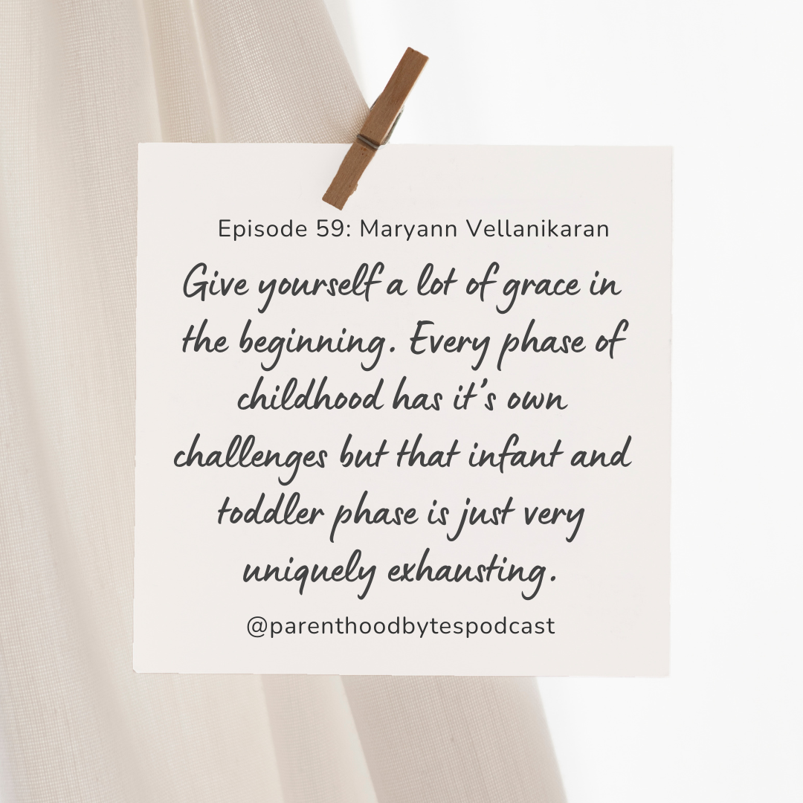

Episode 59: Maryann Vellanikaran

Episode Notes
In this episode, we sit down with Maryann Vellanikaran, an Engineering Leader based in the Bay Area, who shares her experience balancing a demanding career in tech with raising two children, ages 8 and 11. Maryann reflects on her journey navigating the challenges of motherhood, offering insights into the various parental leave options she encountered, the accommodations made for mother's rooms, and how work cultures differ when it comes to supporting parents.
She also discusses how her approach to evaluating potential employers has evolved, setting a higher bar for companies she considers joining. Maryann provides valuable advice, emphasizing that while the early years of parenting can be overwhelming, they pass quickly. As children grow older, the challenges shift—though still present, they are less physically taxing and exhausting.